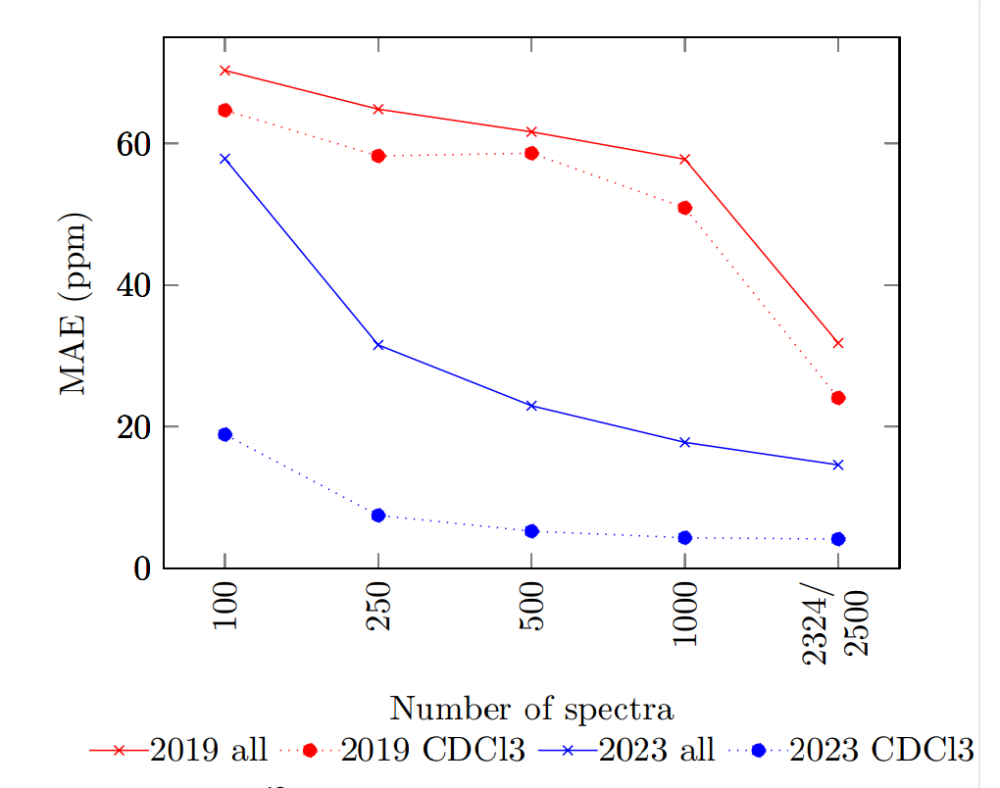

NMR shift prediction from small data quantities
Why discuss this paper?
I chose the NMR shift prediction from small data quantities (Rull, Fischer, and Kuhn 2023) for current topics in the cheminformatics seminar because: - Many of the team memebers and I work on nmrXiv repository development and we would like to introduce NMR shift prediction in the future, which makes the article very relevant. - It is crucial to us to be familiar with available NMR shift prediction models and to understand the conditions under which they perform best. - To understand the effect of NMR experiment parameters (nuclei, solvents) on the prediction results.
Context
Machine Learning (ML) models perform best when trained with the maximum amount of data available. For heteronuclei NMR experiments, such an amount of data is not available. The paper demonstrates a novel ML model (called the 2023 model) that achieves good results for low amounts of data. They predict 13C and 19F NMR chemical shifts of small molecules in specific solvents. Fig1: Graphic abstract of the paper
Introduction
NMR chemical shift prediction can be done in two ways: - Ab-Initio: Calculate the chemical shifts based on the molecular structure and theoretical principles. They require no experimental data but are computationally intensive. - Using Existing Data: Like using ML models to predict shifts for new compounds relying on the experimental data of others. They are computationally efficient (Jonas, Kuhn, and Schlörer 2022).
Problem setting
- The amount of experimental data in NMR for heteronuclei, specific classes of compounds, and particular solvents is limited.
- The number of data points used is a significant factor in the quality of the predictions.
- Some machine learning methods only show suitable predictive power with more than 5000 training examples.
Approach
- The research was restricted to small organic molecules in solution, as other NMR fields require different and more specific models.
- It focuses on the prediction of NMR chemical shifts using ML (graph neural networks).
- The molecules were represented as a graph, where the atoms are nodes, and the bonds are edges. Each has its own features.
- Atoms / Nodes features: Atomic number, Atomic radius, Number of neutrons, Electronegativity, Electron affinity.
- Bonds / Edges features: Bond length, Bond type.
- This specific feature selection was chosen because of preliminary experiments, which measured the impact of each feature on the final prediction.
- The best-performing features were combined until the prediction quality was no longer improving.
Information Flow
Fig2: Schematic flow of information in the message‑passing graph network. The workflow can be split into the following steps: encoding, message‑passing, and prediction of shifts with an MLP.
- The chosen features are encoded by multi-layer perceptron functions.
- The encoded features are then processed through multiple rounds of message-passing in graph network (Duvenaud et al. 2015) (Gilmer et al. 2017).
- This results in new node features that get passed to another MLP that predicts the final chemical shifts.
- The most important hyperparameters were the number of message-passing steps, the learning rate, and the weight decay.
Performance comparison for 13C NMR shift prediction
- Two other prediction methods were used for comparison:
- Hierarchically Ordered Spherical Environment (HOSE) codes:
- It describes atoms and their environments as strings.
- Compounds with similar strings and known chemical shifts are looked up and used for prediction (Bremser 1978).
- 2019 model
- It uses a convolutional graphical neural network (Jonas and Kuhn 2019).
- Hierarchically Ordered Spherical Environment (HOSE) codes:
- Data:
- All data was taken from NMRShiftDB2, an open NMR database (Oellien, Fechner, and Engel 2012), which contains lists of chemical shift values.
- The datasets consist of random selections of structures.
- Evaluation:
- 75:25 training-to-test split.
- No separate validation set due to the small size of the datasets.
- The predictive performance of the different models was analyzed when trained on an increasing number of molecules.
- Error metrics:
- The mean absolute error (MAE): Less Sensitive to Large Errors.
- The root mean squared error (RMSE): It gives more weight to larger errors.
- The mean absolute scaled error (MASE): Insensitive to the scale of the data, such as dealing with different nuclei or solvents.
- The standard deviation σ of the error: Variability of the errors in a set of predictions.
Results
MAE of a 13C NMR shift prediction, using increasing numbers of spectra
RMSE of a 13C NMR shift prediction, using increasing numbers of spectra
MASE of a 13C NMR shift prediction, using increasing numbers of spectra
σ of a 13C NMR shift prediction, using increasing numbers of spectra
The 2023 model outperforms the 2019 model when trained on up to 2500 data points (2023 is better for small data).
The HOSE codes is even better than the 2023 model for small data. However, in some cases, a prediction based on HOSE codes is not possible if no examples with high enough similarity exist in the training set.
Other heteronuclei
- Othe than 13C, 19F spectra was used to test 2023 model.
- In NMRShiftDB2, there were 957 structures with measured 19F spectra.
MAE of a 19F NMR shift prediction, using increasing number of samples, on a logarithmic scale
Results
- HOSE codes is again the best with small data with the 2019 model being the worst with them.
- The 2023 model almost reached HOSE codes performance with the increasing number of spectra.
- Hose codes always has the disadvantage that it might not give a prediction at all.
Solvents
The used solvent is a major factor influencing the chemical shift values of a particular compound due to: - its influence on the chemical environment of the molecule - the possibility of forming hydrogen bonds - changes in the charge state of the investigated molecule.
Accurate predictions require using solvent information, but this makes the available data even fewer. Using 13C spectra from NMRShiftDB2 they train separate models for each solvent and compare the results to the values achieved by using all 13C spectra. The models are not optimized for a solvent-specific prediction.
Results
The overall tendency is similar to what we have seen before: The predictive quality of the 2019 model starts off with high errors and significantly improves beyond 1000 spectra. The 2023 model outperforms the 2019 model on smaller datasets. HOSE codes are generally doing well.

MAE of a 13C NMR shift prediction, using increasing numbers of samples
The solvent-specific training produces much better results compared to the overall model.
Model optimization options:
2023 model can possibly be further optimized by: - Ensuring structural diversity in training/testing datasets, which wasn’t done in model 2023. The random distribution of data was assumed. - optimizing a model hyperparameters specifically for a nucleus or a solvent.
Takeaways
- Predicting NMR shifts is a challenging task for small data, which is the case with heteronuclei and even further with different solvents.
- This paper demonstrates a new ML model that performs better than another model by the same group presented in 2019 for small data.
- Even though Hose codes can be even better than 2023 for small data, it can’t always provide a prediction.